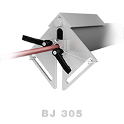
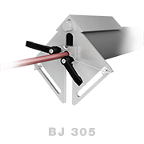
 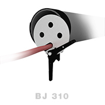
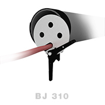
 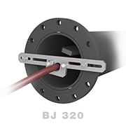
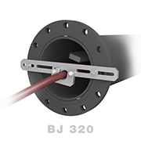
 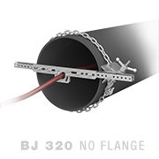
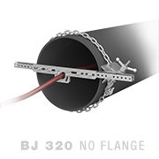
 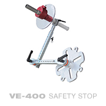
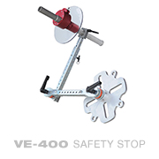
 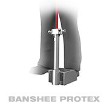
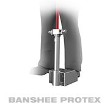
BJV Centralizers
A centralizer helps to protect the tool as it passes through the pipe and balances jet standoff distance for more consistent cleaning. In cases where pipe size is more than 1.5 times the diameter of the tool, a centralizer is an important safety device, preventing the tool from turning around and thrusting backwards out of the pipe.
Utilizes interchangeable plastic runners which can be easily replaced. Works well in elbows, can effectively clean up to 12 in. (305 mm) diameter pipes and works with all BJV models.
| Skid Size | Diameter | |
|---|---|---|
| Small | 6 in. | 150 mm |
| Medium | 8 in. | 200 mm |
| Medium/Large | 10 in. | 250 mm |
| Large | 12 in. | 300 mm |
We recommend using stainless steel centralizers when negotiating complex piping arrangements and removing built-up debris while maintaining jet rotation.
| Diameter | 12 or 20 in. | 300 mm or 510 mm |
|---|---|---|
| Length | 20 or 24 in. | 510 or 610 mm |
| Weight | 12 or 11 lb | 4.5 or 5.0 kg |
Designed for straight pipe runs only, these six-wheel centralizers feature an adjustable, scissor-style aluminum frame and toug plastic wheels. They are compatible with e entire BJV line of rotary tools.
| Centralizer Size | Diameter | Weight |
|---|---|---|
| Small | 9–18 in. 230–460 mm | 20 lb 9 kg |
| Medium | 13–40 in. 330–1000 mm | 32 lb 15 kg |
| Large | 16–60 in. 410–1500 mm | 40 lb 18 kg |
With adjustable, telescopic steel legs and tough plastic wheels, these eight-wheel centralizers are designed to travel through elbows easily and are compatible with the entire BJV line of rotary tools.
| Centralizer Size | Diameter | Weight |
|---|---|---|
| Small | 16–21 in. 410–530 mm | 12 lb 5.5 kg |
| Medium | 22–29 in. 560–740 mm | 13 lb 5.9 kg |
| Large | 30–37 in. 770–940 mm | 16 lb 7.3 kg |
- BPT-100 Info Sheet
- BPT-100 User Manual
- VE-400 User Manual
Courtesy of Advanced Pressure Systems
Our expert staff is available Monday through Friday 8AM - 5PM MST to answer questions and offer advice on your toughest cleaning applications.